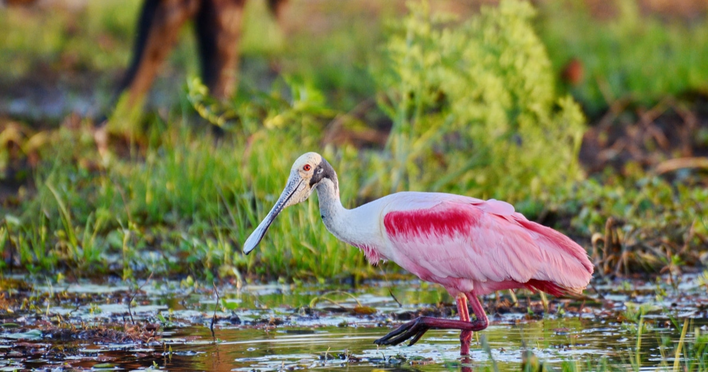
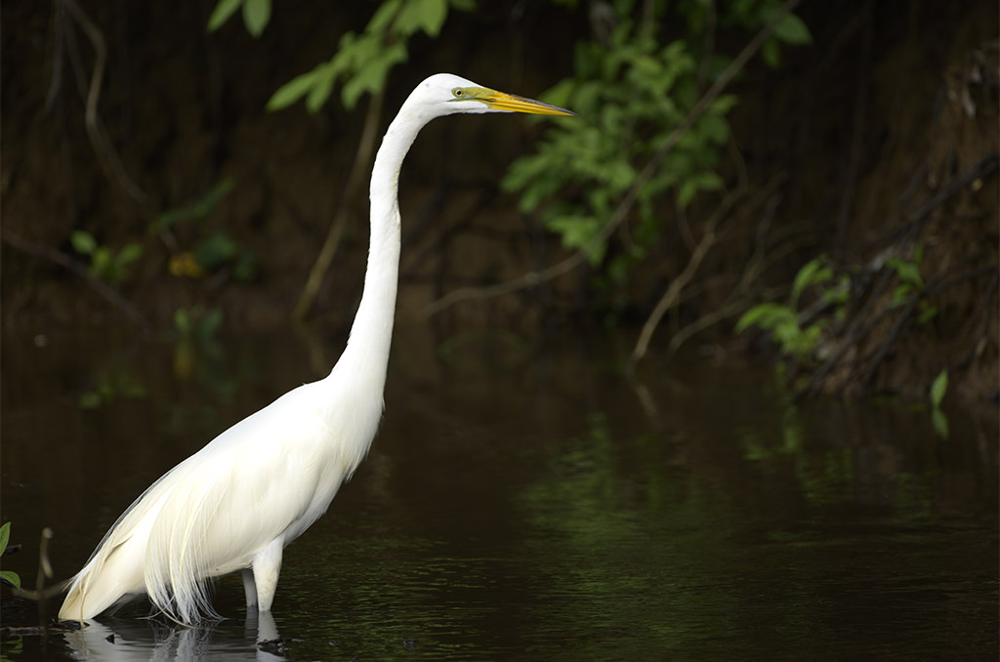

Avistamiento privilegiado
El refugio ofrece excelentes condiciones para observar aves durante distintas épocas del año.
Caño Negro es uno de los escenarios naturales más valiosos de Costa Rica para la observación de aves. Sus lagunas, bosques inundados, caños y playones brindan refugio, alimento y descanso a numerosas especies residentes y migratorias.
Cada una de estas aves refleja la riqueza ecológica de Caño Negro y el valor de conservar un humedal que sostiene vida, turismo responsable y biodiversidad.
El refugio ofrece excelentes condiciones para observar aves durante distintas épocas del año.
Lagunas, canales, bosques inundados y playones crean hábitats ideales para muchas especies.
Algunas aves permanecen todo el año y otras visitan el humedal en temporadas específicas.
La salud del humedal es clave para el descanso, la alimentación y reproducción de las aves.

Es una de las aves más llamativas del humedal por su elegancia, su silueta estilizada y la belleza de su plumaje.
Suele habitar sectores tranquilos con vegetación densa, donde encuentra refugio y condiciones ideales para alimentarse.
Su apariencia fina y su coloración distintiva la convierten en una de las favoritas para fotógrafos y observadores de aves.

El jabirú es una de las aves más impresionantes de los humedales de Centroamérica, destacando por su gran tamaño y porte majestuoso.
Su presencia está estrechamente ligada a la salud de los ecosistemas acuáticos donde encuentra alimento y amplios espacios para desplazarse.
Es una de las aves más grandes que pueden observarse en Caño Negro y una de las especies más buscadas por los visitantes.

Esta especie destaca por su hermoso plumaje rosado y por la forma especial de su pico, adaptado para buscar alimento en aguas poco profundas.
Su presencia aporta color y dinamismo al paisaje natural de lagunas, orillas y playones inundados.
Su pico tiene forma de cuchara y le permite explorar el agua de una manera muy particular mientras se alimenta.

El cigüeñón es un ave grande vinculada a humedales, lagunas someras y zonas abiertas donde puede desplazarse con facilidad.
Su figura robusta y su comportamiento calmado la hacen muy fácil de distinguir durante los recorridos por el refugio.
Es frecuente verlo caminar lentamente en aguas poco profundas mientras busca alimento con gran paciencia.

Esta ave acuática es conocida por su cuello largo y delgado, que sobresale del agua cuando nada, dándole una apariencia muy singular.
Habita lagunas y caños tranquilos, donde suele pescar y luego extender sus alas al sol después de sumergirse.
Cuando nada, a menudo solo se ve su cuello, por eso parece una serpiente deslizándose sobre el agua.

Es una de las aves más elegantes y reconocibles de los humedales costarricenses. Su plumaje blanco le da una presencia muy limpia y distinguida.
En Caño Negro puede observarse en lagunas, canales y sectores abiertos donde busca peces, insectos y otros pequeños organismos.
Es una de las especies que más fácilmente pueden verse durante los recorridos de observación en zonas acuáticas.